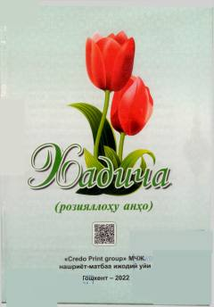

XRPayg'ambar rafiqasi Xadicha onaning hayoti va fazilatlari haqida diniy kitob.
Ushbu kitob Payg'ambarimiz Muhammad sollallohu alayhi vasallamning birinchi rafiqasi Xadicha roziyallohu anhoning hayoti, fazilatlari va xulq-atvori haqida diniy-ma'rifiy ma'lumotlar beradi. Kitobda musulmon oilasida er-xotin munosabatlari va islomiy axloq namunasi sifatida Xadicha onaning tutumi yoritilgan. Asar Toshkentda 2022-yilda nashr etilgan.